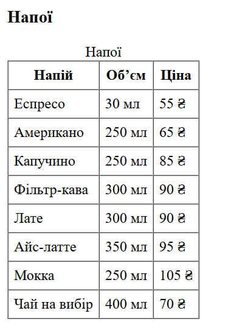
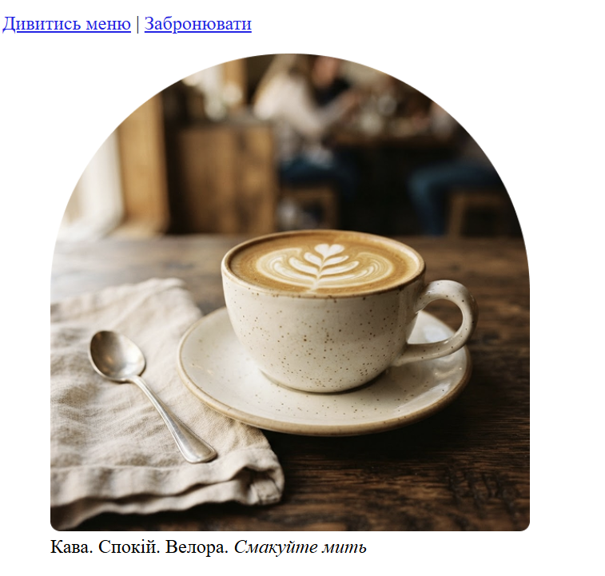
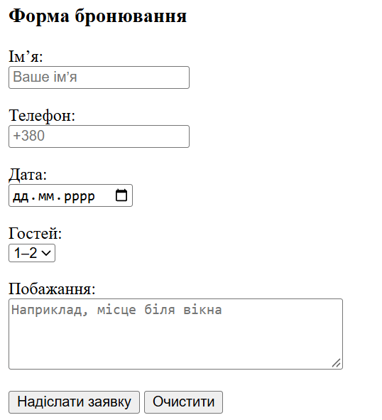
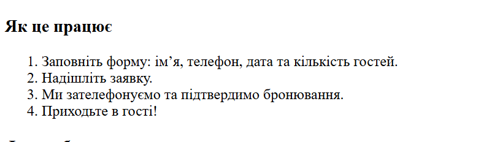
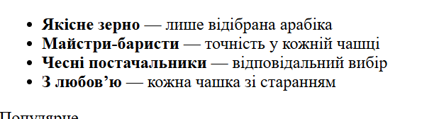
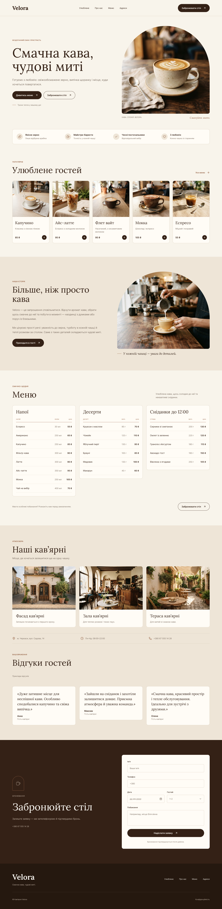
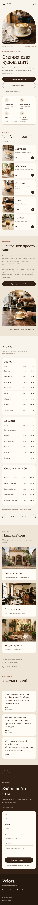

Місце виведення інформації
Тема, мета, місце розташування сайту та звіту
Тема ЛР №1.1
Розроблення головної сторінки WEB-застосунку мовою HTML: таблиці, зображення, списки, форми та посилання.
Мета ЛР №1.1
Вивчити структуру HTML-документа; навчитися застосовувати теги та атрибути для створення таблиць, зображень, списків і форм; розробити головну сторінку власного WEB-застосунку (сайт кав’ярні Velora) та оформити звітний HTML-документ лабораторних робіт.
Місце розташування WEB-застосунку та звітів
| Призначення | Посилання |
|---|---|
| Репозиторій власного WEB-застосунку | https://github.com/golybez-4/IP-45_appWEB-ShmahailoMaria-FIOT-2026 |
| Жива сторінка власного WEB-застосунку | https://golybez-4.github.io/IP-45_appWEB-ShmahailoMaria-FIOT-2026/ |
| Репозиторій звітного HTML-документа | https://github.com/golybez-4/IP-45_appRECORD-ShmahailoMaria-FIOT-2026 |
| Жива сторінка звітного HTML-документа | https://golybez-4.github.io/IP-45_appRECORD-ShmahailoMaria-FIOT-2026/ |
| Репозиторій із самостійними роботами | https://github.com/golybez-4/IP-45_INDEPENDENT-ShmahailoMaria-FIOT-2026 |
| Жива сторінка із самостійними роботами | https://golybez-4.github.io/IP-45_INDEPENDENT-ShmahailoMaria-FIOT-2026/ |
Опис предметного середовища. Опис бізнес-логіки
Предметне середовище
Предметна галузь — громадське харчування, а саме кав’ярня. Velora — затишна кав’ярня, сайт якої працює як візитівка закладу: гість знайомиться з меню та атмосферою й залишає заявку на бронювання столу.
Весь зміст організований навколо трьох сутностей: позиція меню (назва, категорія, об’єм або вага, ціна), кав’ярня (адреса, години роботи, телефон, фото) та бронювання (ім’я, телефон, дата, кількість гостей, побажання). Користувач один — Гість; реєстрація й вхід не потрібні.
Функціонал застосунку
- Головна — назва, опис, фото, кнопки «Дивитись меню» та «Забронювати», блок переваг.
- Улюблене гостей — п’ять карток популярних напоїв із фото, описом і ціною.
- Про нас — історія та цінності закладу.
- Меню — три таблиці: напої, десерти, сніданки до 12:00.
- Наші кав’ярні — фасад, зала, тераса; адреса, години роботи, телефон.
- Відгуки гостей — добірка відгуків.
- Бронювання столу — форма заявки; бронь підтверджується після дзвінка.
Бізнес-логіка (скорочений опис)
- Гість відкриває сайт Velora і бачить головну сторінку.
- Переглядає переваги закладу, улюблені напої, розділ «Про нас».
- Переходить до меню й переглядає напої, десерти та сніданки з цінами.
- Дивиться розділ «Наші кав’ярні» та читає відгуки.
- Натискає «Забронювати стіл» і заповнює форму: ім’я, телефон, дата, кількість гостей, побажання.
- Система перевіряє дані; за потреби гість виправляє помилки.
- Система приймає заявку й показує повідомлення про успішне надсилання.
- Кав’ярня телефонує гостю та підтверджує бронь.
Бізнес-правила
- Шапка навігації та підвал відображаються на всіх екранах.
- Для кожної позиції меню показано назву, об’єм або вагу й ціну в гривнях.
- Ім’я, телефон і дата в формі обов’язкові; дата не може бути в минулому.
- Бронь вважається дійсною лише після підтвердження кав’ярні по телефону.
Повний опис із функціональними та нефункціональними вимогами й діаграмою варіантів використання — на сторінці «Опис предметної галузі та бізнес-логіки» WEB-застосунку.
Структура документа
Головна сторінка WEB-застосунку Velora (файл index.html) побудована за семантичною структурою та містить обов’язкові елементи завдання.
<header>— заголовок<h1>та навігація<nav>з посиланнями<a>- посилання-якорі на розділи сторінки;
- посилання на сторінку
about.htmlз описом предметної галузі.
<main>— основний вміст<section id="hero">— заголовок<h2>, зображення в<figure>з<figcaption>;<section id="advantages">— маркований список<ul>;<section id="popular">— картки<article>із зображеннями<img>і заголовками<h3>;<section id="about">— абзаци<p>, зображення;<section id="menu">— три таблиці<table>(напої, десерти, сніданки);<section id="places">— зображення, контакти в<address>зі списком;<section id="reviews">— відгуки в<blockquote>;<section id="booking">— нумерований список<ol>та форма<form>.
<footer>— підвал із повтором навігації та посиланням на опис предметної галузі.
HTML-код таблиці
Код
<table border="1" cellpadding="6" cellspacing="0"> <!-- таблиця: border — рамка, cellpadding — відступ усередині комірки, cellspacing — відстань між комірками -->
<caption>Напої</caption> <!-- підпис таблиці -->
<thead> <!-- група рядків заголовка -->
<tr><th>Напій</th><th>Об’єм</th><th>Ціна</th></tr> <!-- рядок із заголовками стовпців (th) -->
</thead>
<tbody> <!-- основна частина таблиці -->
<tr><td>Еспресо</td><td>30 мл</td><td>55 ₴</td></tr> <!-- рядок даних: кожна комірка — td -->
<tr><td>Американо</td><td>250 мл</td><td>65 ₴</td></tr>
<tr><td>Капучино</td><td>250 мл</td><td>85 ₴</td></tr>
<tr><td>Фільтр-кава</td><td>300 мл</td><td>90 ₴</td></tr>
<tr><td>Лате</td><td>300 мл</td><td>90 ₴</td></tr>
<tr><td>Айс-латте</td><td>350 мл</td><td>95 ₴</td></tr>
<tr><td>Мокка</td><td>250 мл</td><td>105 ₴</td></tr>
<tr><td>Чай на вибір</td><td>400 мл</td><td>70 ₴</td></tr>
</tbody>
</table> <!-- кінець таблиці -->Скріншот таблиці

Теорія: теги та атрибути для створення таблиць
Таблиця в HTML — це структурований набір даних, розташованих у рядках і стовпцях. Для її створення використовують спеціальні теги.
| Тег | Призначення |
|---|---|
<table> | контейнер таблиці |
<caption> | заголовок (підпис) таблиці |
<thead> | група рядків заголовка таблиці |
<tbody> | група рядків основної частини |
<tfoot> | група рядків підсумків (підвал таблиці) |
<tr> | рядок таблиці |
<th> | комірка-заголовок (за замовчуванням жирна та по центру) |
<td> | звичайна комірка з даними |
<colgroup>, <col> | опис груп стовпців |
| Атрибут | Тег | Призначення |
|---|---|---|
border | <table> | товщина рамки таблиці в пікселях (в сучасних проєктах замінюється CSS) |
cellpadding | <table> | відступ між вмістом комірки та її межею |
cellspacing | <table> | відстань між комірками |
width | <table>, <td>, <th> | ширина таблиці або комірки |
colspan | <td>, <th> | кількість стовпців, які об’єднує комірка |
rowspan | <td>, <th> | кількість рядків, які об’єднує комірка |
scope | <th> | показує, до чого відноситься заголовок: col (стовпець) або row (рядок); важливо для доступності |
headers | <td> | зв’язок комірки із заголовками за їхнім id |
align, valign | <td>, <th> | вирівнювання вмісту (застарілі, краще CSS) |
У нашій таблиці використано <caption>, <thead> та <tbody>, що робить структуру зрозумілою для браузерів і програм екранного читання.
HTML-код зображення
Код
<figure> <!-- figure — ілюстрація з підписом -->
<img src="mainphoto.png" alt="Лате в керамічній чашці на дерев’яному столі" width="400"> <!-- src — файл, alt — опис, width — ширина в пікселях -->
<figcaption>Кава. Спокій. Велора. <em>Смакуйте мить</em></figcaption> <!-- підпис до зображення; em — наголос -->
</figure> <!-- кінець ілюстрації -->Скріншот зображення

Теорія: тег <img> та його атрибути
Тег <img> вставляє зображення в документ. Він є одинарним (не має закривального тега). Для підпису зображення використовують пару <figure> і <figcaption>.
| Атрибут | Призначення |
|---|---|
src | обов’язковий; шлях до файлу зображення (відносний або абсолютний URL) |
alt | обов’язковий; альтернативний текст, який показується, якщо зображення не завантажилось, і читається програмами екранного читання |
width | ширина зображення в пікселях |
height | висота зображення в пікселях |
title | підказка, що з’являється при наведенні курсора |
loading | відкладене завантаження: lazy або eager |
srcset, sizes | набір зображень різного розміру для адаптивних екранів |
class, id, style | глобальні атрибути для стилізації та ідентифікації |
HTML-код форми
Код
<form action="#" method="post"> <!-- форма: action — куди надсилати, method — як надсилати -->
<p>
<label for="name">Ім’я:</label><br> <!-- label зв’язано з полем через for та id -->
<input type="text" id="name" name="name" placeholder="Ваше ім’я" required> <!-- текстове поле; required — обов’язкове -->
</p>
<p>
<label for="phone">Телефон:</label><br>
<input type="tel" id="phone" name="phone" placeholder="+380" required> <!-- поле для телефону -->
</p>
<p>
<label for="date">Дата:</label><br>
<input type="date" id="date" name="date" required> <!-- вибір дати -->
</p>
<p>
<label for="guests">Гостей:</label><br>
<select id="guests" name="guests"> <!-- випадаючий список кількості гостей -->
<option value="1-2">1–2</option> <!-- пункт списку; value — значення, яке передається -->
<option value="3-4">3–4</option>
<option value="5-6">5–6</option>
<option value="7+">7+</option>
</select>
</p>
<p>
<label for="wishes">Побажання:</label><br>
<textarea id="wishes" name="wishes" rows="4" cols="40" placeholder="Наприклад, місце біля вікна"></textarea> <!-- багаторядкове поле; rows, cols — розмір -->
</p>
<p>
<button type="submit">Надіслати заявку</button> <!-- кнопка надсилання форми -->
<button type="reset">Очистити</button> <!-- кнопка очищення форми -->
</p>
<p><small>Бронювання підтверджується після дзвінка.</small></p> <!-- дрібна примітка -->
</form>Скріншот форми

Теорія: теги та атрибути форм
Форма дає змогу користувачу вводити дані та надсилати їх на сервер.
| Тег | Призначення |
|---|---|
<form> | контейнер форми |
<label> | підпис до поля; зв’язується з полем через атрибут for |
<input> | поле введення; вигляд залежить від атрибута type |
<select>, <option> | випадаючий список і його пункти |
<textarea> | багаторядкове текстове поле |
<button> | кнопка (відправлення, скидання, звичайна) |
<fieldset>, <legend> | групування полів і заголовок групи |
| Атрибут | Призначення |
|---|---|
action | адреса, на яку надсилаються дані форми |
method | метод надсилання: get або post |
type | тип поля input: text, tel, date, email, number, checkbox, radio, submit тощо |
name | ім’я поля, під яким дані передаються на сервер |
id | унікальний ідентифікатор; зв’язує поле з label |
for | в label вказує id поля, до якого належить підпис |
placeholder | підказка всередині порожнього поля |
required | поле обов’язкове для заповнення |
value | початкове значення поля або значення пункту списку |
rows, cols | висота та ширина textarea в рядках і символах |
HTML-код списків
Код
<ul> <!-- маркований список (переваги) -->
<li><strong>Якісне зерно</strong> — лише відібрана арабіка</li> <!-- елемент списку; strong — важливе -->
<li><strong>Майстри-баристи</strong> — точність у кожній чашці</li>
<li><strong>Чесні постачальники</strong> — відповідальний вибір</li>
<li><strong>З любов’ю</strong> — кожна чашка зі старанням</li>
</ul>
<ol> <!-- нумерований список (кроки) -->
<li>Заповніть форму: ім’я, телефон, дата та кількість гостей.</li> <!-- елемент нумерованого списку -->
<li>Надішліть заявку.</li>
<li>Ми зателефонуємо та підтвердимо бронювання.</li>
<li>Приходьте в гості!</li>
</ol>
<ul> <!-- маркований список (контакти) -->
<li>Адреса: м. Черкаси, вул. Садова, 14</li>
<li>Години роботи: Пн–Нд, 08:00–22:00</li>
<li>Телефон: <a href="tel:+380675551428">+380 67 555 14 28</a></li> <!-- tel: — посилання-дзвінок -->
</ul>Скріншоти списків


Теорія: теги та атрибути для створення списків
| Тег | Призначення |
|---|---|
<ul> | маркований (невпорядкований) список |
<ol> | нумерований (впорядкований) список |
<li> | елемент списку |
<dl> | список визначень |
<dt> | термін у списку визначень |
<dd> | опис терміна |
| Атрибут | Тег | Призначення |
|---|---|---|
type | <ol>, <ul> | вид нумерації (1, A, a, I, i) або маркера (disc, circle, square) |
start | <ol> | число, з якого починається нумерація |
reversed | <ol> | зворотний порядок нумерації |
value | <li> | номер конкретного елемента нумерованого списку |
Списки можна вкладати один в одного: усередину елемента <li> розміщують новий <ul> або <ol>. Так побудовано, зокрема, навігацію сторінки.
Головна сторінка WEB-застосунку
Головна сторінка WEB-застосунку Velora (файл index.html). Макети десктопної та мобільної версій — у підрозділах нижче, код сторінки — у розділі «Код головної сторінки WEB-застосунку».
Жива сторінка: https://golybez-4.github.io/IP-45_appWEB-ShmahailoMaria-FIOT-2026/
Головна сторінка — десктопна версія
Макет головної сторінки WEB-застосунку Velora для настільних екранів (Figma). Макет можна прокручувати.

Головна сторінка — мобільна версія
Макет головної сторінки WEB-застосунку Velora для мобільних пристроїв (Figma). Макет можна прокручувати.

Код головної сторінки WEB-застосунку
Файл index.html WEB-застосунку Velora:
<!DOCTYPE html> <!-- документ HTML5 -->
<html lang="uk"> <!-- мова сторінки — українська -->
<head>
<meta charset="UTF-8"> <!-- кодування символів -->
<meta name="viewport" content="width=device-width, initial-scale=1.0"> <!-- коректний масштаб на мобільних -->
<title>Velora — кав’ярня | Головна</title> <!-- заголовок вкладки -->
</head>
<body>
<!-- ШАПКА -->
<header> <!-- семантичний тег: шапка -->
<h1>Velora</h1> <!-- головний заголовок сторінки -->
<nav> <!-- семантичний тег: навігація -->
<ul> <!-- список посилань -->
<li><a href="#popular">Улюблене</a></li> <!-- якір до розділу з id=popular -->
<li><a href="#about">Про нас</a></li>
<li><a href="#menu">Меню</a></li>
<li><a href="#places">Адреси</a></li>
<li><a href="about.html">Опис предметної галузі та бізнес-логіки</a></li>
<li><a href="#booking">Забронювати стіл</a></li>
</ul>
</nav>
</header>
<main> <!-- семантичний тег: основний вміст -->
<!-- HERO -->
<section id="hero"> <!-- семантичний тег: тематичний розділ -->
<p>Бездоганний смак і пристрасть</p>
<h2>Смачна кава, чудові миті</h2> <!-- заголовок другого рівня -->
<p>Готуємо з любов’ю: свіжообсмажене зерно, випічка щоранку і місце, куди хочеться повертатись.</p>
<p>
<a href="#menu">Дивитись меню</a> |
<a href="#booking">Забронювати</a>
</p>
<figure> <!-- ілюстрація з підписом -->
<img src="mainphoto.png" alt="Лате в керамічній чашці на дерев’яному столі" width="400"> <!-- зображення: src, alt, width -->
<figcaption>Кава. Спокій. Велора. <em>Смакуйте мить</em></figcaption>
</figure>
</section>
<!-- ПЕРЕВАГИ (маркований список) -->
<section id="advantages">
<h2>Чому обирають нас</h2>
<ul> <!-- маркований список переваг -->
<li><strong>Якісне зерно</strong> — лише відібрана арабіка</li>
<li><strong>Майстри-баристи</strong> — точність у кожній чашці</li>
<li><strong>Чесні постачальники</strong> — відповідальний вибір</li>
<li><strong>З любов’ю</strong> — кожна чашка зі старанням</li>
</ul>
</section>
<!-- УЛЮБЛЕНЕ ГОСТЕЙ -->
<section id="popular">
<p>Популярне</p>
<h2>Улюблене гостей</h2>
<article> <!-- самодостатній блок: картка напою -->
<img src="cappuccino.png" alt="Капучино" width="200">
<h3>Капучино</h3>
<p>Класика з ніжною пінкою</p>
<p><strong>85 ₴</strong></p>
</article>
<article>
<img src="icedlate.png" alt="Айс-латте" width="200">
<h3>Айс-латте</h3>
<p>Еспресо з холодним молоком</p>
<p><strong>95 ₴</strong></p>
</article>
<article>
<img src="flatwhite.png" alt="Флет вайт" width="200">
<h3>Флет вайт</h3>
<p>Насичений, з оксамитовим молоком</p>
<p><strong>95 ₴</strong></p>
</article>
<article>
<img src="mocha.png" alt="Мокка" width="200">
<h3>Мокка</h3>
<p>Шоколад і еспресо</p>
<p><strong>105 ₴</strong></p>
</article>
<article>
<img src="espresso.png" alt="Еспресо" width="200">
<h3>Еспресо</h3>
<p>Міцний і яскравий</p>
<p><strong>55 ₴</strong></p>
</article>
<p><a href="#menu">Усе меню</a></p>
</section>
<!-- ПРО НАС -->
<section id="about">
<p>Наша історія</p>
<h2>Більше, ніж просто кава</h2>
<p>Velora — це запрошення сповільнитися. Відчути аромат кави, обрати щось смачне до неї та побути в моменті — наодинці з думками або поруч із близькими.</p>
<p>Ми цінуємо прості речі: уважність до зерна, турботу в кожній чашці й теплі розмови за столом. Саме з таких деталей складаються чудові миті.</p>
<figure>
<img src="history.png" alt="Бариста наливає молоко в чашку з кавою" width="400">
<figcaption>У кожній чашці — увага до деталей.</figcaption>
</figure>
<p><a href="#booking">Приходьте в гості</a></p>
</section>
<!-- МЕНЮ (таблиці) -->
<section id="menu">
<p>Смачно і щодня</p>
<h2>Меню</h2>
<p>Улюблена кава, що солодке до неї та невимовні сніданки.</p>
<h3>Напої</h3>
<table border="1" cellpadding="6" cellspacing="0"> <!-- таблиця меню -->
<caption>Напої</caption>
<thead> <!-- рядки заголовка -->
<tr><th>Напій</th><th>Об’єм</th><th>Ціна</th></tr>
</thead>
<tbody> <!-- основна частина таблиці -->
<tr><td>Еспресо</td><td>30 мл</td><td>55 ₴</td></tr>
<tr><td>Американо</td><td>250 мл</td><td>65 ₴</td></tr>
<tr><td>Капучино</td><td>250 мл</td><td>85 ₴</td></tr>
<tr><td>Фільтр-кава</td><td>300 мл</td><td>90 ₴</td></tr>
<tr><td>Лате</td><td>300 мл</td><td>90 ₴</td></tr>
<tr><td>Айс-латте</td><td>350 мл</td><td>95 ₴</td></tr>
<tr><td>Мокка</td><td>250 мл</td><td>105 ₴</td></tr>
<tr><td>Чай на вибір</td><td>400 мл</td><td>70 ₴</td></tr>
</tbody>
</table>
<h3>Десерти</h3>
<table border="1" cellpadding="6" cellspacing="0">
<caption>Десерти</caption>
<thead>
<tr><th>Десерт</th><th>Вага</th><th>Ціна</th></tr>
</thead>
<tbody>
<tr><td>Круасан з маслом</td><td>90 г</td><td>70 ₴</td></tr>
<tr><td>Чізкейк</td><td>120 г</td><td>110 ₴</td></tr>
<tr><td>Яблучний пиріг</td><td>130 г</td><td>95 ₴</td></tr>
<tr><td>Брауні</td><td>100 г</td><td>85 ₴</td></tr>
<tr><td>Медовик</td><td>130 г</td><td>100 ₴</td></tr>
<tr><td>Макарун</td><td>40 г</td><td>60 ₴</td></tr>
</tbody>
</table>
<h3>Сніданки до 12:00</h3>
<table border="1" cellpadding="6" cellspacing="0">
<caption>Сніданки до 12:00</caption>
<thead>
<tr><th>Страва</th><th>Вага</th><th>Ціна</th></tr>
</thead>
<tbody>
<tr><td>Сирники зі сметаною</td><td>200 г</td><td>130 ₴</td></tr>
<tr><td>Омлет із зеленню</td><td>220 г</td><td>120 ₴</td></tr>
<tr><td>Гранола з йогуртом</td><td>180 г</td><td>115 ₴</td></tr>
<tr><td>Авокадо-тост</td><td>190 г</td><td>150 ₴</td></tr>
<tr><td>Вівсянка з ягодами</td><td>250 г</td><td>105 ₴</td></tr>
</tbody>
</table>
<p>Маєте особливі побажання? Розкажіть нам перед замовленням.</p>
<p><a href="#booking">Забронювати стіл</a></p>
</section>
<!-- НАШІ КАВ'ЯРНІ -->
<section id="places">
<p>Атмосфера</p>
<h2>Наші кав’ярні</h2>
<p>Місце, де хочеться залишитися ще на одну чашку.</p>
<article>
<img src="facade.png" alt="Фасад кав’ярні" width="300">
<h3>Фасад кав’ярні</h3>
<p>Затишок починається з першого кроку.</p>
</article>
<article>
<img src="hall.png" alt="Зала кав’ярні" width="300">
<h3>Зала кав’ярні</h3>
<p>Для теплих розмов і тихих пауз.</p>
</article>
<article>
<img src="terrace.png" alt="Тераса кав’ярні" width="300">
<h3>Тераса кав’ярні</h3>
<p>Для митей зі смаком кави.</p>
</article>
<h3>Контакти</h3>
<address> <!-- семантичний тег: контактна інформація -->
<ul> <!-- контакти у списку -->
<li>Адреса: м. Черкаси, вул. Садова, 14</li>
<li>Години роботи: Пн–Нд, 08:00–22:00</li>
<li>Телефон: <a href="tel:+380675551428">+380 67 555 14 28</a></li> <!-- tel: — посилання-дзвінок -->
</ul>
</address>
</section>
<!-- ВІДГУКИ -->
<section id="reviews">
<p>Ваші враження</p>
<h2>Відгуки гостей</h2>
<blockquote> <!-- відгук гостя (цитата) -->
<p>«Дуже затишне місце для неспішної кави. Особливо сподобалися капучино та свіжа випічка.»</p>
<footer><strong>Анна</strong>, гість кав’ярні</footer> <!-- footer тут — підпис автора відгуку -->
</blockquote>
<blockquote>
<p>«Зайшли на сніданок і захотіли залишитися довше. Приємна атмосфера й уважна команда.»</p>
<footer><strong>Максим</strong>, гість кав’ярні</footer>
</blockquote>
<blockquote>
<p>«Смачна кава, красивий простір і тепле обслуговування. Ідеально для зустрічі з друзями.»</p>
<footer><strong>Олена</strong>, гість кав’ярні</footer>
</blockquote>
</section>
<!-- БРОНЮВАННЯ (нумерований список + форма) -->
<section id="booking">
<p>Бронювання</p>
<h2>Забронюйте стіл</h2>
<p>Залиште заявку — ми зателефонуємо й підтвердимо бронь.</p>
<h3>Як це працює</h3>
<ol> <!-- нумерований список кроків -->
<li>Заповніть форму: ім’я, телефон, дата та кількість гостей.</li>
<li>Надішліть заявку.</li>
<li>Ми зателефонуємо та підтвердимо бронювання.</li>
<li>Приходьте в гості!</li>
</ol>
<h3>Форма бронювання</h3>
<form action="#" method="post"> <!-- форма бронювання -->
<p>
<label for="name">Ім’я:</label><br> <!-- label зв’язано з полем через for та id -->
<input type="text" id="name" name="name" placeholder="Ваше ім’я" required>
</p>
<p>
<label for="phone">Телефон:</label><br>
<input type="tel" id="phone" name="phone" placeholder="+380" required> <!-- поле для телефону -->
</p>
<p>
<label for="date">Дата:</label><br>
<input type="date" id="date" name="date" required> <!-- вибір дати -->
</p>
<p>
<label for="guests">Гостей:</label><br>
<select id="guests" name="guests"> <!-- випадаючий список -->
<option value="1-2">1–2</option>
<option value="3-4">3–4</option>
<option value="5-6">5–6</option>
<option value="7+">7+</option>
</select>
</p>
<p>
<label for="wishes">Побажання:</label><br>
<textarea id="wishes" name="wishes" rows="4" cols="40" placeholder="Наприклад, місце біля вікна"></textarea> <!-- багаторядкове поле -->
</p>
<p>
<button type="submit">Надіслати заявку</button> <!-- кнопка надсилання -->
<button type="reset">Очистити</button>
</p>
<p><small>Бронювання підтверджується після дзвінка.</small></p>
</form>
</section>
</main>
<!-- ПІДВАЛ -->
<footer> <!-- семантичний тег: підвал сторінки -->
<h2>Velora</h2>
<p>Смачна кава, чудові миті.</p>
<nav>
<ul>
<li><a href="#popular">Улюблене</a></li>
<li><a href="#about">Про нас</a></li>
<li><a href="#menu">Меню</a></li>
<li><a href="#places">Адреси</a></li>
<li><a href="about.html">Предметна галузь і бізнес-логіка</a></li>
</ul>
</nav>
<p><small>© Кав’ярня Velora</small></p>
</footer>
</body>
</html>
Висновки
У ході лабораторної роботи №1 я вивчила структуру HTML-документа та розробила головну сторінку WEB-застосунку кав’ярні Velora. На сторінці використано заголовки різних рівнів, зображення з альтернативним текстом і підписами, таблиці меню зі структурою caption/thead/tbody, маркований і нумерований списки, форму бронювання та посилання, зокрема на сторінку з описом предметної галузі.
Я ознайомилася з тегами та атрибутами, що застосовуються для створення таблиць, зображень, списків і форм, та застосувала семантичні теги (header, nav, main, section, article, figure, address, footer). Також було створено звітний HTML-документ, розміщений на GitHub. Здобуті навички стануть основою для подальшого оформлення сторінок за допомогою CSS.